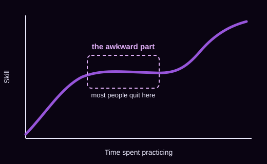

Drawing
Your first sketches will look nothing like the ones you admire. That gap is normal, and it closes with repetition, not talent.
A hobby accountability site for people who keep starting over
Most of us have a drawer of half-used hobby supplies. We get excited, buy the gear, watch the tutorials, and then drop it a few weeks later, the moment we realize we are mediocre at it instead of naturally talented.
StartOver exists for that exact moment. Being bad at something early on is not a sign you should stop. It is the part everyone goes through, and it is easier to get through when you know what to expect.
See realistic timelines
Your first sketches will look nothing like the ones you admire. That gap is normal, and it closes with repetition, not talent.
Early sessions are mostly about falling safely and learning footwork. Strength comes later than most beginners expect.
Sore fingertips and buzzing chords are the standard first month. Short, regular practice beats long, rare sessions.
StartOver is a small resource built around one idea: most people do not quit a hobby because they lose interest. They quit because early mediocrity feels uncomfortable and nobody told them to expect it.
Here you will find realistic beginner timelines, honest stories about the unimpressive early stages of learning something new, and simple check-in prompts to help you keep going. The goal is to keep hobbies enjoyable, so nothing here is meant to turn a hobby into a chore or a second job.
For more on why progress often feels slow before it speeds up, see James Clear's article on how long it takes to form a new habit.